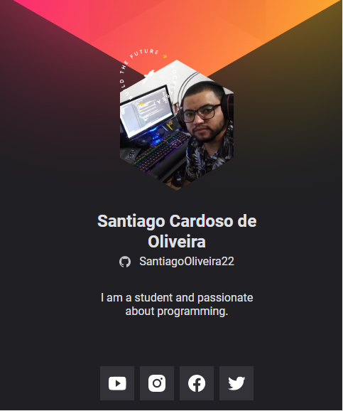

Sobre mim:
Eu sou o Santiago, tenho 30 anos, sou casado com a Fernanda, há 11 anos, tenho duas nenéns pets,
a Maria Pipoca e a Kyara, são lindas demais, pacotinhos de amor, aqui já dá para perceber os amores da minha vida,
agora vou falar de um outro amor, de algo que faz meus olhos brilharem,
meu coração encher de emoção, vamos lá.
A tecnologia, o computador, amo estudar sobre, e através dela poder resolver problemas, trazendo facilidade,
melhorias e conforto para a vida das pessoas e impactar o mundo através da tecnologia.
Aqui fica um breve resumo de quem eu sou e dos motores da minha vida.
Formação
OneBitCode
Javascript FullStack 8 week / html, css, sass, bulma / bootstrap / git e github / react / javascript / typescript / nodejs (Express) / banco de dados (Mongo e Posgresql).
Ínicio: 10/01/2022 - Término: 30/07/2022
Danki Code
Front-end / Desenvolvimento Web / Full Stack / Produtividade Programadores / Inglês para programadoes / Wordpress / Infraestrutura / Angência Web / Vivier de négocios onlive.
Ínicio: 10/02/2021 - Término: 20/12/2022
Uninove
Tecnologia em Análise e Desnvolvimento de Sistemas
Ínicio: 10/02/2020 - Término: 30/06/2022
Rocketseat
Trilha nlw Mission Origin
Ínicio: 23/04/2022 - Término: 28/04/2022
Labenu
Web Full Stack
Ínicio: 28/03/2022 - Término: 31/03/2023
Galeria de Projetos
cracha-nlw
Lista de habilidades técnicas e comportamentais
- HTML
Facilidade na utilização. - Git
Aplico os comandos com tranqulidade. - Persistência
Eu não desisto do que eu quero. - Consistência
Fazer um pouco todos os dias. - Disciplina
Fazer o que precisa ser feito, mesmo quando não está motivado.